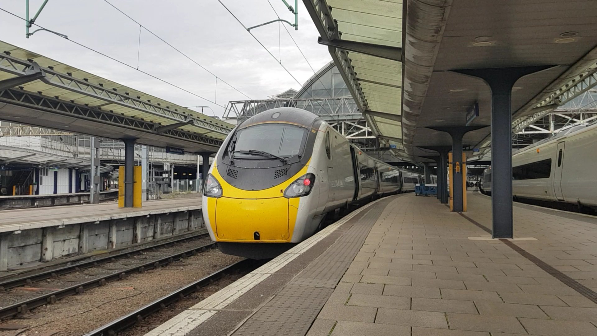

Energy usage overall will have decreased slightly since the start of lockdown but has started to increase again overtime. [12]
Some businesses may have closed down therefore there will be no need to use their machinery. Offices have generally closed down too, and offices provide work for hundreds of employees. This would mean that each employee will work from home if they can, thus spreading out the energy consumption to each of their homes meaning it will actually increase as they use their own energy supplies instead of sharing it in the offices, for example sharing the lighting and computers. Peak time for work bandwidth is now generally later on in the day, energy usage in the morning (ie between 0600-0900) has dropped by approximately 20%. Due to the lack of commuting to work and being able to work from home with flexibility, people are now using the morning to lie in. Lying in will also help improve staff happiness as they will be well rested, this can also improve productivity. [13]
If businesses are happy with their employees being able to work from home, they will need to have most of their employees work from home so they can reduce office space in order to help cut energy usage. Energy is saved best when employees are working from home full time compared to blended working ie spending three days at the office and two days at home as it would involve more commuting and using both home and office energy. When working from home full time, if you are needing to drop the children off to school and go shopping then it is better to do these in the same trip to help save the most amount of energy possible. People who remote work tend to live further away from their offices than employees who work full time in the office meaning they have a longer commute. This can even out as say the employee based in the office lives 2 miles from the office, that's 20 miles per week commuting to/from work. Whereas with a remote-working employee living 10 miles from the office and going to the office once a week, this means they will be commuting 20 miles per week aswell. [14]
Not as many people are commuting to work anymore, rail travel decreased in March and April due to the sharp outbreak of COVID-19 which resulted in cuts to the timetable. This means I believe that rail companies such as Scotrail can save energy by not running as many trains when there is no demand for it in terms of passenger loadings. [15] Passenger numbers in March/April 2020 reached their lowest level in over 150 years. Whilst there has been a small increase in passengers travelling since May when lockdown was eased, it is still very low compared to pre-covid. [16] Train operating companies since mid-May have begun to increase their timetables nearer to the frequencies pre-covid but the energy usage per passenger is still very high due to the lower levels of passengers on near enough empty trains. [17]


[19]